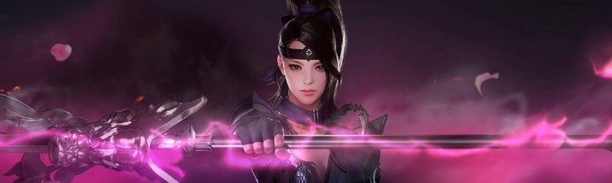

Все игры
Blade and Soul

Blade & Soul — игра жанра MMORPG, разработкой которой занимается подразделение Team Bloodlust (Lineage2, Aion), принадлежащее корейскому гиганту NCsoft. Первые сведения об игре появились в 2007 году, когда NCsoft, незадолго до NCmedia Day, анонсировали находящуюся в разработке MMORPG с кодовым названием Project M, основными направлением которой будут восточные единоборства в мире азиатского фэнтези, для создания которого, по заявлению разработчиков, они черпали вдохновение из культурных образов таких стран как Корея, Китай, Монголия, Тайвань и др.
Revelation online

Revelation — современная MMORPG, в которой возможно все! Исследуй каждый уголок огромного мира, останови зло в ожесточенных битвах с могущественными боссами, собери гильдию и прими участие в масштабных осадах замков. Игра разработана лидирующей китайской игровой компанией NetEase, издателями легендарной World of Warcraft. Разработчики объединили и модернизировали в Revelation лучшие игровые механики MMORPG.
Lost Ark
Lost Ark — это клиентская фэнтезийная массовая многопользовательская ролевая онлайн игра для PC, разработанная корейское компанией Smilegate RPG. Действие происходит в фентезийном мире с элементами магии и дизельпанка. Lost Ark — это уникальный сплав традиционных Action-RPG старой школы и лучших элементов MMO! Наполненные интересными механиками и сложными боссами подземелья, развитая система PvP, широкие возможности прокачки и гибкой настройки персонажа — в Lost Ark вы найдете все, что искали!
Black Desert Online
Black Desert — игра в жанре MMORPG от разработчиков PearlAbyss (издатель в Корее Daum, локализатор в России PearlAbyss (GameNet до 12 октября 2018 года). В Южной Корее игра распространяется по модели free-to-play, в России был free-to-play и pay-to-play серверы до 12 октября 2018 года. С 22 ноября открыт только free-to-play сервер, в остальных странах система оплаты будет зависеть от издателя. С декабря 2018 года Pearl Abyss заключили соглашение с компанией «Иннова» о предоставлении точки входа с платформы Фогейм.
Tera

TERA (сокращение от The Exiled Realm of Arborea) — массовая многопользовательская ролевая онлайн-игра (MMORPG), разработанная южнокорейской компанией Bluehole Studio. Игра издана в Южной Корее 25 января 2011 года, в Северной Америке — 1 мая 2012 года, в Европе — 3 мая 2012 года, в России — 26 февраля 2015 года. Изданию игры каждый раз предшествовали этапы закрытого и открытого бета-тестирования. В данных регионах издателями являются NHN Entertainment, En Masse Entertainment, Gameforge и Destiny Games соответственно. Во время перехода игры на финансовую модель free-to-play в феврале 2013 года название игры было заменено на TERA: Rising. В сентябре 2014 года название игры было заменено на TERA: Fate of Arun одновременно с выходом обновления, в котором был повышен максимальный уровень персонажа и введен новый игровой контент.
Aion

Айон — компьютерная игра в жанре MMORPG, разработанная NCSoft, сочетающая в себе PvP и PvE в мире фэнтези. В Японии известна под названием Tower of Aion. По состоянию на 20 мая 2009 года Aion насчитывала более 3,5 миллионов подписчиков в Азии. Русскоязычная версия игры издается компанией «Иннова», релиз состоялся 27 декабря 2009 года. В настоящий момент официальные российские сервера стали полностью бесплатными, с возможностью покупки премиума. После перехода на бизнес-моделью F2P (free-to-play) европейские сервера стали полностью бесплатными, с возможностью покупки Gold Pack (снимающий ограничение на торговлю и передачу предметов, так же имеется возможность купить Gold Pack за игровую валюту)
World of Warcraft

World of Warcraft — массовая многопользовательская ролевая онлайн-игра, разработанная и издаваемая компанией Blizzard Entertainment. Действие World of Warcraft происходит в фэнтезийной вселенной Warcraft. Игра тесно связана с предыдущими играми серии — стратегиями в реальном времени; каждый игрок управляет одним персонажем и может взаимодействовать с другими игроками в общем виртуальном мире. Игра была анонсирована в 2001 году и выпущена 23 ноября 2004 года, к 10-летней годовщине Warcraft: Orcs & Humans. World of Warcraft предоставляется игрокам на основе ежемесячной платной подписки; кроме того, для игры регулярно выпускаются тематические платные дополнения, добавляющие в игру новые области, новые классы персонажей и иной дополнительный или обновлённый контент. 27 августа 2019 года состоялся релиз версии игры под названием Classic, основанной на первоначальном состоянии игры (версия 1.12) без накопившихся за последующие годы дополнений и обновлений.
Astellia
Astellia - новая игра в жанре MMORPG, сочетающая в себе классические механики и оригинальную систему коллекционирования боевых питомцев - астеллов. Соберите более 30 астеллов с уникальными способностями и характерами поведения. Покоряйте загадочные подземелья, участвуйте в массовых PVE событиях или сражайтесь на арене против других игроков. В игре доступен глобальный ивент Авалон, в котором противостояние происходит между 3 фракциями игроков. Astellia - мир для настоящих героев и искателей приключений, в котором магия и отвага переплетается с коварством и интригами.